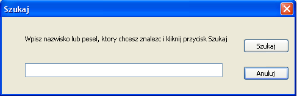

S¹ 2 sposoby wyszukiwania: wed³ug nazwiska i weg³ug peselu. Aby wyszukaæ nazwisko lub pesel, mo¿esz wybraæ w menu Pacjent opcje Szukaj, skrótem klawiszowym Ctrl+F lub lup¹ na pasku narzêdzi. Potem pojawi siê okienko "Szukaj" w którym trzeba wpisaæ szukane nazwisko/pesel i klikn¹æ przycisk Ok. Nie trzeba wpisywaæ ca³ego peselu. Wystarczy wpisaæ 6 pierwszych cyfr(datê urodzenia). Jeœli has³o zostanie znalezione, wyœwietli siê w polach edycji, jeœli nie, pojawi siê komunikat informuj¹cy o tym.
